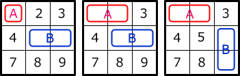
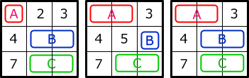
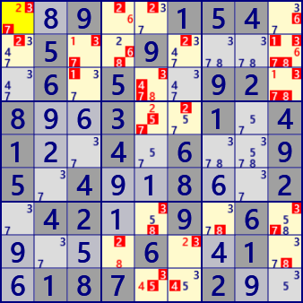
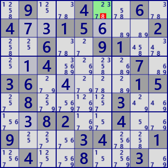

Super Link
In Sudoku's various solutions, Strong and Weak links between cells are used.
There are various kinds of links besides inter-cell links.
Grouped Cells link is a link by arrangement of multiple cells of block.
EmptyRectangle is an algorithm based on a combination of Grouped cells link and inter-cell link.
ALS based algorithms use a relatively simple Link that occurs in ALS.
Inter-cell link, Grouped Cells link, ALS link will be called super link.
Here, we show the algorithm to use super link in conjunction.
It is difficult to understand Superlink's program code by browsing only, it is not shown here.
Download GNPX and taste it.
Since the restriction of A → B is not transmitted, nothing makes sense.
Grouped Cells Link
Assume that numbers are arranged in blocks 1, 2, and 3 as shown on the left.
At this time, if the number in cell A is #1, the number in cell group B is -#1 (not 1).
This is a weak link from cell A to cell group B.
If the arrangement is as shown in the right figure, constraints are transmitted to A(1)→B(-#1)→C(#1).
A(-#1)→B(#1)→C(-# 1) also carries restrictions.
In the right figure there are four links A→B and B→C and the opposite direction.
Define Grouped cells link.
In the cell group, constraints are transmitted from the direction(House) in which the cell arrangement is extended,
and constraints are transmitted in the direction to extend the cell arrangement.
When cell group B of the link is a single cell, the constraint is transmitted to multiple directions (House).
| Strong/Weak link |
Cell group pattern example (There are cases where there are no candidate numbers (#n) for numeric display cells) |
リンク | |
|---|---|---|---|
| Row(Column) | Strong Link | A(-#n)→B(#n) B(-#n)→A(#n) A(#n)→B(-#n) B(#n)→A(-#n) |
|
| Weak Link |  |
A(#n)→B(-#n) A(#n)→C(-#n) B(#n)→C(-#n) B(#n)→A(-#n) C(#n)→A(-#n) C(#n)→B(-#n) |
|
| Block | Strong Link |  | A(-#n)→B(#n) B(-#n)→A(#n) A(#n)→B(-#n) B(#n)→A(-#n) |
| Weak Link |  | A(#n)→B(-#n) A(#n)→C(-#n) B(#n)→C(-#n) B(#n)→A(-#n) C(#n)→A(-#n) C(#n)→B(-#n) |
ALS Link
If weak link from outside ALS excludes numbers in ALS(#n in the figure below),
ALS will change to LockedSet.
As a result, the cell(grouped cells) and number(#m in the figure below) in the ALS may form a link outside the ALS.
At this time, a strong link(-#n→#m) is made in ALS.
Since ALS link is a link when ALS changes to LockedSet, there is no weak link in ALS.
In addition, the ALS link is a link occurring inside one ALS,
and ALS link will not be continuous because the trigger for ALS link is a weak link from the outside.
Always Cell-to-Cell links or Grouped Cells links are located in front and behind.
Link concatenation
Concatenation of super links is strong and weak like the strong link and weak link of the inter-cell link,
and the way of transfer of constraints is the same.
If both ends of a link are a single cell, it is decided to be a cell/number true or false.
But in case of multiple cells, it is true or false of multiple cells and the number is not fixed.
But the truth information is transmitted to ahead.
In the following figure(fig.1), when the number #1 of the yellow cell is assumed to be true,
the authenticity of the cell/number is confirmed by concatenation of the super link.
Likewise, fig.2 shows how the true and false of other cells/numbers are determined
when assuming that the number #2 in the yellow cell is true.
Consolidated display legend
- [... -> ...] is a link
- => is a concatenation of links
- SW in [] represents the Strong/Weak link.
- (ALS ...) is ALS link
- <...> is a Grouped Cell link
- n is the digit, + means true, - means false.
fig.1 Assuming r2c2/+1

r2c6/-3 [W r2c2/+1 -> r2c8/-1] => [S (ALS:r2c68) r2c8/-1 -> r2c6/+8] => [W r2c6/+8 -> r2c6/-3]
r2c6/+8 [W r2c2/+1 -> r2c8/-1] => [S (ALS:r2c68) r2c8/-1 -> r2c6/+8]
r2c8/-1 [W r2c2/+1 -> r2c8/-1]
r2c8/+3 [W r2c2/+1 -> r2c8/-1] => [S r2c8/-1 -> r2c8/+3]
r3c2/-1 [W r2c2/+1 -> r3c2/-1]
r3c2/+8 [W r2c2/+1 -> r3c2/-1] => [S r3c2/-1 -> r3c2/+8]
r3c4/+3 [W r2c2/+1 -> r3c2/-1] => [S (ALS:r3c24) r3c2/-1 -> r3c4/+3]
r3c4/-8 [W r2c2/+1 -> r3c2/-1] => [S (ALS:r3c24) r3c2/-1 -> r3c4/+3] => [W r3c4/+3 -> r3c4/-8]
r3c9/+1 [W r2c2/+1 -> r2c8/-1] => [S r2c8/-1 -> r3c9/+1]
r3c9/-3 [W r2c2/+1 -> r2c8/-1] => [S r2c8/-1 -> r3c9/+1] => [W r3c9/+1 -> r3c9/-3]
r4c5/+1 [W r2c2/+1 -> r2c8/-1] => [S r2c8/-1 -> r3c9/+1] => [W r3c9/+1 -> r4c9/-1] => [S r4c9/-1 -> r4c5/+1]
r4c5/-6 [W r2c2/+1 -> r2c8/-1] => [S r2c8/-1 -> r3c9/+1] => [W r3c9/+1 -> r4c9/-1] => [S r4c9/-1 -> r4c5/+1] => [W r4c5/+1 -> r4c5/-6]
r4c9/-1 [W r2c2/+1 -> r2c8/-1] => [S r2c8/-1 -> r3c9/+1] => [W r3c9/+1 -> r4c9/-1]
r5c4/-3 [W r2c2/+1 -> r3c2/-1] => [W r3c2/+8 -> r3c4/-8] => [W r3c4/+3 -> r5c4/-3]
r5c5/-1 [W r2c2/+1 -> r2c8/-1] => [S r2c8/-1 -> r5c8/+1] => [W r5c8/+1 -> r5c5/-1]
r5c6/-8 [W r2c2/+1 -> r2c8/-1] => [W r2c8/+3 -> r2c6/-3] => [W r2c6/+8 -> r5c6/-8]
r5c8/+1 [W r2c2/+1 -> r2c8/-1] => [S r2c8/-1 -> r5c8/+1]
r5c8/-4 [W r2c2/+1 -> r2c8/-1] => [S r2c8/-1 -> r5c8/+1] => [W r5c8/+1 -> r5c8/-4]
r5c8/-6 [W r2c2/+1 -> r2c8/-1] => [S r2c8/-1 -> r5c8/+1] => [W r5c8/+1 -> r5c8/-6]
r6c6/-8 [W r2c2/+1 -> r2c8/-1] => [W r2c8/+3 -> r2c6/-3] => [W r2c6/+8 -> r6c6/-8]
r7c6/-8 [W r2c2/+1 -> r2c8/-1] => [W r2c8/+3 -> r2c6/-3] => [W r2c6/+8 -> r7c6/-8]
r7c8/-3 [W r2c2/+1 -> r2c8/-1] => [W r2c8/+3 -> r7c8/-3]
r8c4/-3 [W r2c2/+1 -> r3c2/-1] => [W r3c2/+8 -> r3c4/-8] => [W r3c4/+3 -> r8c4/-3]
r8c8/-3 [W r2c2/+1 -> r2c8/-1] => [W r2c8/+3 -> r8c8/-3]
r9c3/-4 [W r2c2/+1 -> r2c8/-1] => [W r2c8/+3 -> r2c6/-3] => [W r2c6/+8 -> r9c6/-8]
=> [S (ALS:r9c69) r9c6/-8 ->
r9c5/-3 [W r2c2/+1 -> r2c8/-1] => [W r2c8/+3 -> r2c6/-3] => [W r2c6/+8 -> r9c6/-8]
=> [S (ALS:r9c69) r9c6/-8 ->
r9c6/-8 [W r2c2/+1 -> r2c8/-1] => [W r2c8/+3 -> r2c6/-3] => [W r2c6/+8 -> r9c6/-8]
.4...1.286..5....7..7.46...7.3..98..9.......2..12..3.9...95.1..1....2..559.1...7.
fig.1 Assuming r2c2/+1

r1c4/-2 [W r1c1/+2 -> r1c4/-2]
r1c4/+6 [W r1c1/+2 -> r1c4/-2] => [S r1c4/-2 -> r1c4/+6]
r1c5/-2 [W r1c1/+2 -> r1c5/-2]
r1c9/-6 [W r1c1/+2 -> r1c4/-2] => [W r1c4/+6 -> r1c9/-6]
r2c1/-2 [W r1c1/+2 -> r2c1/-2]
r2c3/+1 [W r1c1/+2 -> r1c4/-2] => [W r1c4/+6 -> r1c9/-6] => [S r1c9/-6 -> r2c9/+6]
=> [S r2c9/-1 -> r2c3/+1]
r2c3/-3 [W r1c1/+2 -> r1c4/-2] => [W r1c4/+6 -> r1c9/-6] => [S r1c9/-6 -> r2c9/+6]
=> [S r2c9/-1 -> r2c3/+1] => [W r2c3/+1 -> r2c3/-3]
r2c3/-7 [W r1c1/+2 -> r1c4/-2] => [W r1c4/+6 -> r1c9/-6] => [S r1c9/-6 -> r2c9/+6]
=> [S r2c9/-1 -> r2c3/+1] => [W r2c3/+1 -> r2c3/-7]
r2c4/-6 [W r1c1/+2 -> r1c4/-2] => [W r1c4/+6 -> r2c4/-6]
r2c4/-8 [W r1c1/+2 -> r1c4/-2] => [W r1c4/+6 -> r1c9/-6] => [S (ALS:r1c9 r2c78) r1c9/-6 ->
r2c6/-2 [W r1c1/+2 -> r1c4/-2] => [W r1c4/+6 -> r1c9/-6] => [S (ALS:r1c9 r2c78) r1c9/-6 ->
r2c9/-1 [W r1c1/+2 -> r1c4/-2] => [W r1c4/+6 -> r1c9/-6] => [S r1c9/-6 -> r2c9/+6] => [W r2c9/+6 -> r2c9/-1]
r2c9/-3 [W r1c1/+2 -> r1c4/-2] => [W r1c4/+6 -> r1c9/-6] => [S r1c9/-6 -> r2c9/+6] => [W r2c9/+6 -> r2c9/-3]
r2c9/+6 [W r1c1/+2 -> r1c4/-2] => [W r1c4/+6 -> r1c9/-6] => [S r1c9/-6 -> r2c9/+6]
r2c9/-7 [W r1c1/+2 -> r1c4/-2] => [W r1c4/+6 -> r1c9/-6] => [S r1c9/-6 -> r2c9/+6] => [W r2c9/+6 -> r2c9/-7]
r2c9/-8 [W r1c1/+2 -> r1c4/-2] => [W r1c4/+6 -> r1c9/-6] => [S r1c9/-6 -> r2c9/+6] => [W r2c9/+6 -> r2c9/-8]
r3c3/-1 [W r1c1/+2 -> r1c4/-2] => [W r1c4/+6 -> r1c9/-6] => [S (ALS:r1c9 r2c78 r3c9) r1c9/-6 -> r3c9/+1] => [W r3c9/+1 -> r3c3/-1]
r3c5/-3 [W r1c1/+2 -> r1c4/-2] => [W r1c4/+6 -> r1c9/-6] => [S (ALS:r1c9 r2c78 r3c9) r1c9/-6 -> r3c9/+1] => [W r3c9/+1 -> r3c3/-1]
=> [S (ALS:r3c1356) r3c3/-1 -> r3c5/+8] => [W r3c5/+8 -> r3c5/-3]
r3c5/-4 [W r1c1/+2 -> r1c4/-2] => [W r1c4/+6 -> r1c9/-6] => [S (ALS:r1c9 r2c78 r3c9) r1c9/-6 -> r3c9/+1] => [W r3c9/+1 -> r3c3/-1]
=> [S (ALS:r3c1356) r3c3/-1 -> r3c5/+8] => [W r3c5/+8 -> r3c5/-4]
r3c5/-7 [W r1c1/+2 -> r1c4/-2] => [W r1c4/+6 -> r1c9/-6] => [S (ALS:r1c9 r2c78 r3c9) r1c9/-6 -> r3c9/+1] => [W r3c9/+1 -> r3c3/-1]
=> [S (ALS:r3c1356) r3c3/-1 -> r3c5/+8] => [W r3c5/+8 -> r3c5/-7]
r3c5/+8 [W r1c1/+2 -> r1c4/-2] => [W r1c4/+6 -> r1c9/-6] => [S (ALS:r1c9 r2c78 r3c9) r1c9/-6 -> r3c9/+1] => [W r3c9/+1 -> r3c3/-1]
=> [S (ALS:r3c1356) r3c3/-1 -> r3c5/+8]
r3c9/+1 [W r1c1/+2 -> r1c4/-2] => [W r1c4/+6 -> r1c9/-6] => [S (ALS:r1c9 r2c78 r3c9) r1c9/-6 -> r3c9/+1]
r3c9/-3 [W r1c1/+2 -> r1c4/-2] => [W r1c4/+6 -> r1c9/-6] => [S (ALS:r1c9 r2c78 r3c9) r1c9/-6 -> r3c9/+1] => [W r3c9/+1 -> r3c9/-3]
r3c9/-7 [W r1c1/+2 -> r1c4/-2] => [W r1c4/+6 -> r1c9/-6] => [S (ALS:r1c9 r2c78 r3c9) r1c9/-6 -> r3c9/+1] => [W r3c9/+1 -> r3c9/-7]
r3c9/-8 [W r1c1/+2 -> r1c4/-2] => [W r1c4/+6 -> r1c9/-6] => [S (ALS:r1c9 r2c78 r3c9) r1c9/-6 -> r3c9/+1] => [W r3c9/+1 -> r3c9/-8]
r4c5/+2 [W r1c1/+2 -> r1c5/-2] => [S r1c5/-2 -> r4c5/+2]
r4c5/-5 [W r1c1/+2 -> r1c5/-2] => [S r1c5/-2 -> r4c5/+2] => [W r4c5/+2 -> r4c5/-5]
r4c5/-7 [W r1c1/+2 -> r1c5/-2] => [S r1c5/-2 -> r4c5/+2] => [W r4c5/+2 -> r4c5/-7]
r4c6/-2 [W r1c1/+2 -> r1c5/-2] => [S r1c5/-2 -> r4c5/+2] => [W r4c5/+2 -> r4c6/-2]
r7c5/-3 [W r1c1/+2 -> r1c4/-2] => [W r1c4/+6 -> r1c9/-6] => [S (ALS:r1789c9) r1c9/-6 ->
r7c5/-8 [W r1c1/+2 -> r1c4/-2] => [W r1c4/+6 -> r1c9/-6] => [S (ALS:r1c9 r2c78 r3c9) r1c9/-6 -> r3c9/+1] => [W r3c9/+1 -> r3c3/-1]
=> [S (ALS:r3c1356) r3c3/-1 -> r3c5/+8] => [W r3c5/+8 -> r7c5/-8]
r7c7/-8 [W r1c1/+2 -> r1c4/-2] => [W r1c4/+6 -> r1c9/-6] => [S (ALS:r1789c9) r1c9/-6 ->
r7c9/-3 [W r1c1/+2 -> r1c4/-2] => [W r1c4/+6 -> r1c9/-6] => [S (ALS:r1789c9) r1c9/-6 ->
r7c9/-7 [W r1c1/+2 -> r1c4/-2] => [W r1c4/+6 -> r1c9/-6] => [S (ALS:r1789c9) r1c9/-6 ->
r8c4/-2 [W r1c1/+2 -> r1c4/-2] => [W r1c4/+6 -> r1c9/-6] => [S (ALS:r1c9 r2c78) r1c9/-6 ->
r8c4/+8 [W r1c1/+2 -> r1c4/-2] => [W r1c4/+6 -> r1c9/-6] => [S (ALS:r1c9 r2c78) r1c9/-6 ->
r8c6/+2 [W r1c1/+2 -> r1c4/-2] => [W r1c4/+6 -> r1c9/-6] => [S (ALS:r1c9 r2c78) r1c9/-6 ->
r8c6/-3 [W r1c1/+2 -> r1c4/-2] => [W r1c4/+6 -> r1c9/-6] => [S (ALS:r1c9 r2c78) r1c9/-6 ->
r8c9/-8 [W r1c1/+2 -> r1c4/-2] => [W r1c4/+6 -> r1c9/-6] => [S (ALS:r1c9 r2c78) r1c9/-6 ->
r9c5/-3 [W r1c1/+2 -> r1c4/-2] => [W r1c4/+6 -> r1c9/-6] => [S (ALS:r1c9 r2c78 r3c9) r1c9/-6 -> r3c9/+1] => [W r3c9/+1 -> r3c3/-1]
=> [S (ALS:r3c1356) r3c3/-1 -> r3c5/+8] => [W r3c5/+8 -> r7c5/-8] => [S (ALS:r14579c5) r7c5/-8 -> r9c5/+4] => [W r9c5/+4 -> r9c5/-3]
r9c5/+4 [W r1c1/+2 -> r1c4/-2] => [W r1c4/+6 -> r1c9/-6] => [S (ALS:r1c9 r2c78 r3c9) r1c9/-6 -> r3c9/+1] => [W r3c9/+1 -> r3c3/-1]
=> [S (ALS:r3c1356) r3c3/-1 -> r3c5/+8] => [W r3c5/+8 -> r7c5/-8] => [S (ALS:r14579c5) r7c5/-8 -> r9c5/+4]
r9c5/-5 [W r1c1/+2 -> r1c4/-2] => [W r1c4/+6 -> r1c9/-6] => [S (ALS:r1c9 r2c78 r3c9) r1c9/-6 -> r3c9/+1] => [W r3c9/+1 -> r3c3/-1]
=> [S (ALS:r3c1356) r3c3/-1 -> r3c5/+8] => [W r3c5/+8 -> r7c5/-8] => [S (ALS:r14579c5) r7c5/-8 -> r9c5/+4] => [W r9c5/+4 -> r9c5/-5]
r9c6/-4 [W r1c1/+2 -> r1c4/-2] => [W r1c4/+6 -> r1c9/-6] => [S (ALS:r1c9 r2c78) r1c9/-6 ->
..9..154..5..9.....6.5..92.8..3..1.41..4.6..95.4..8..2.42..9.6.....6..1..187..2..
Superlink linking is an extremely powerful technique.
The method described above is used for ForceChain (Cell, House), KrakenFish, GroupedNiceLoop.
In addition, there are the following usage methods.
Assuming that a certain cell/number is true,
it is sometimes possible for both the true and false to lead to other cell/number in the superlink concatenation.
This is a contradiction, the first assumption is incorrect.
This method is also a type of ForceChain solution(Force-Contradiction).
Of course, it shows the links that leads true and false.
fig.3 Both +n/-n can lead

r1c6/#8 is false
[W r1c6/+8 -> r5c6/-8] => [S r5c6/-8 -> r5c7/+8] => [W r5c7/+8 -> r2c7/-8] => [S r2c7/-8 -> r2c8/+8] => [W r2c8/+8 -> r8c8/-8]
[W r1c6/+8 -> r5c6/-8] => [S r5c6/-8 -> r5c7/+8] => [W r5c7/+8 -> r8c7/-8] => [S r8c7/-8 -> r8c8/+8]
.9..4..6.4..15...2..6..91....4....7.36.....15.8....3....82..4..9...34..1.4..8..3.